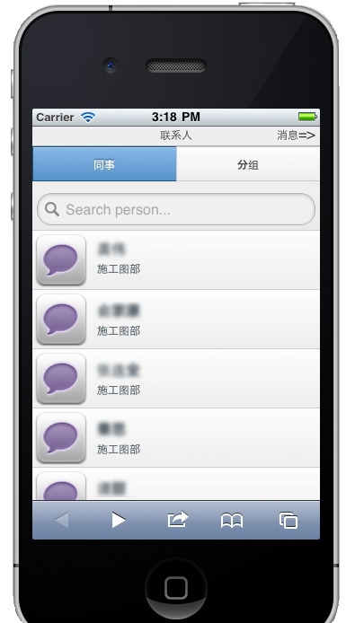
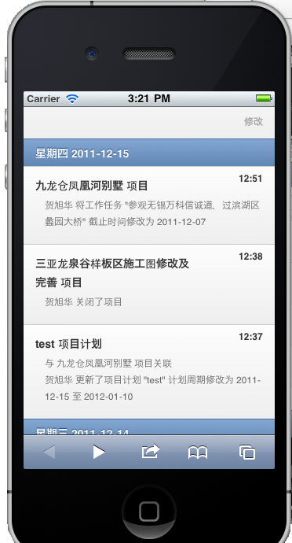
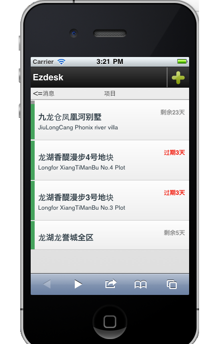
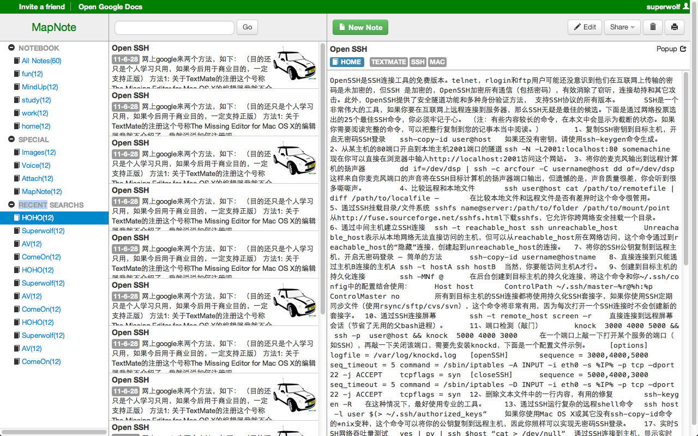

Tomas Huang(黄冠)
自我介绍 - 黄冠
天津融金汇银贵金属经营有限公司高级技术顾问
上海魏玛软件创始人
前Microsoft MSNBC Team前端工程师
HTML5小组讲师
CNodejs社区上海负责人
HTML5小组
非营利性线下社区
推广宣传使用HTML5技术
拥有大量的一流游戏开发人员，Web应用开发人员，设计师
作品展示
RedStone
使用Silverlight/WPF技术构建的一站式网站管理平台
EzDesk
后端使用Dotnet/Nodejs，前端使用Hybrid技术在IOS组合HTML5构建的类Yammer企业级平台。
  
去搞定
使用Nodejs+HTML5构建的任务管理网站。
MapNote
使用Nodejs+Hadoop+HTML5，构建而成桌面和IPad通用的知识管理软件，其中包括思维导图功能。

技术领域
RIA WebApp架构
敏捷实践
TDD/BDD
DevOps构建
Scrum项目管理
响应式移动设备应用架构
一个应用程序可以自动匹配不同屏幕大小，从而产生不同的表现，提供更加优秀的用户体验
Nodejs技术指导
高性能网站
高性能服务器端
为WebApp提供REST/Websocket组合服务器端
←
→
/
Go to slide:
#